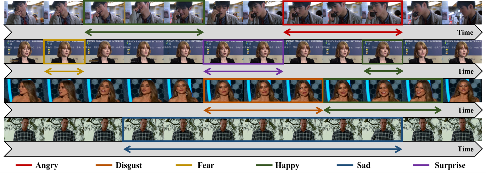

SDFE-LV: An Unconstrained Database for Spotting Dynamic Facial Expressions in Long Videos

Overview
SDFE-LV is a large-scale unconstrained facial expression database for spotting the onset and offset frames of a complete dynamic facial expression sample from long videos.
It has consists of 1,323 long videos collected from multiple media resources, e.g., interviews, reality shows, speeches, movies, documentaries, we-media short videos, and others.
Based on the crowdsourcing annotations, each long video in SDFE-LV was independently labeled for five times.
Samples

Download
Term & Conditions
-
SDFE-LV database is provided for academic, non-commercial, not-for-profit purposes only.
-
All videos of the SDFE-LV database are obtained from the Internet, not the property of AIPL, Southeast University, China. The AIPL is not responsible for the content or the meaning of these videos.
-
Reproduction, copy, sell of any portion of the SDFE-LV for any commercial purposes are not permitted.
-
Redistribution, republishing, or dissemination of any portion of the SDFE-LV in any form, source or binary, are not permitted without prior written approval by the licensor.
-
The AIPL reserves the right to terminate your access to the DFEW database at any time.
How to get the Password
This database is publicly available. It is free for professors and researcher scientists affiliated to a University.
Permission to use but not reproduce or distribute the SDFE-LV database is granted to all researchers given that the following steps are properly followed:
-
Download and sign the User License Agreement on SDFE-LV Database.
-
Send an e-mail to Xiaolin Xu before downloading the database.
-
The verification will be conducted after we receive the application email for the database. The verification process will take no more than one week and we will endeavor to complete it as quickly as possible.
-
Upon successful verification, an email containing the database downloading link and password will be sent to you.
Note:
-
Students are not eligible to be a recipient. If you are a student, please have your supervisor to make a request.
-
Your Email MUST be sent from a valid University account.
-
If this data is used, in whole or in part, for any publishable work, the following paper must be referenced.
Content Preview

For more details of the database, please refer to the paper "SDFE-LV: An Unconstrained Database for Spotting Dynamic Facial Expressions in Long Videos".
Citation
@article{xu2022sdfe,
title={SDFE-LV: A Large-Scale, Multi-Source, and Unconstrained Database for Spotting Dynamic Facial Expressions in Long Videos},
author={Xu, Xiaolin and Zong, Yuan and Zheng, Wenming and Li, Yang and Tang, Chuangao and Jiang, Xingxun and Jiang, Haolin},
journal={arXiv preprint arXiv:2209.08445},
year={2022}
}
Contact
Please contact Xiaolin Xu for questions about the database.